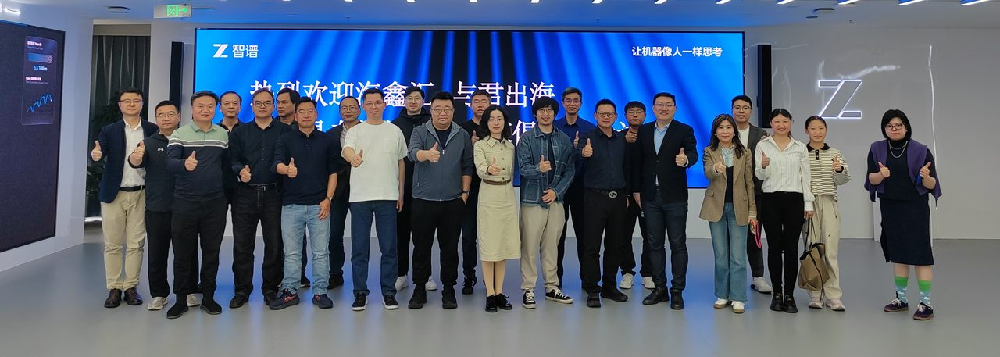
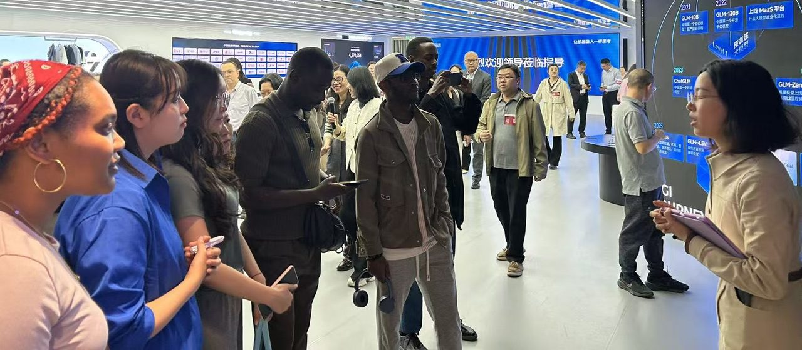
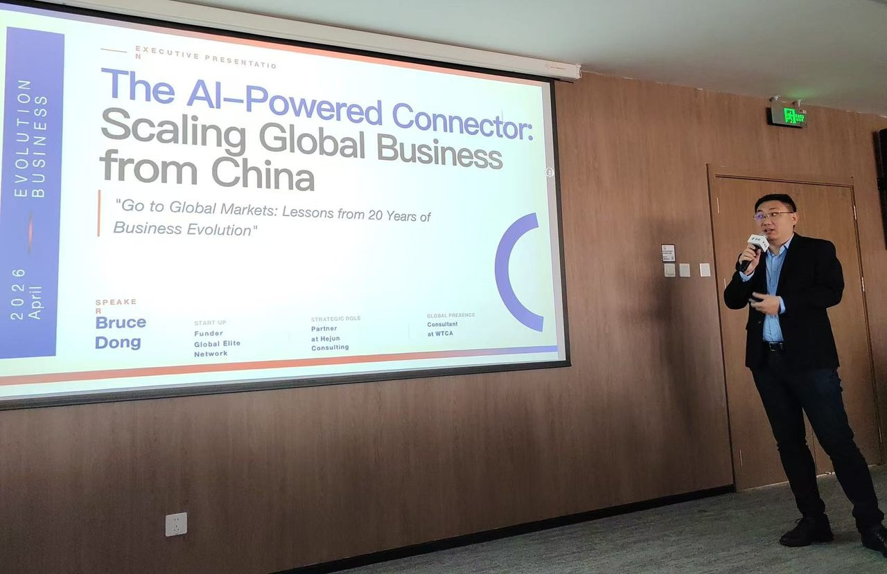

走进智谱Z.AI（02513.HK）
清华系大模型企业的技术前沿与全球化视角 / Inside China's Frontier LLM Company

活动背景
2026年4月23日，海鑫汇 GTN联合和勤易专精特新企业家俱乐部共同主办"走进智谱AI·共话智能未来"交流活动，在北京市海淀区举行。活动汇聚企业家代表、行业精英及国际友人，以实地参观、深度分享、互动交流的形式，搭建AI技术、企业资源与国际合作的沟通桥梁。
智谱AI：清华系大模型领军企业
参会嘉宾参观了智谱AI展厅，通过实物展示、场景演示了解其发展历程、核心技术成果及多领域应用案例。

智谱AI源自清华大学技术成果转化，是全球为数不多的拥有自主研发预训练模型、全栈算法架构和多模态应用能力的企业。其研发的GLM系列大模型在全球权威评测中屡获佳绩，已广泛应用于民生治理、工业制造、金融等多个行业。
技术分享：GLM系列模型与产业应用
智谱AI相关负责人围绕企业发展理念、核心技术优势及前沿应用成果展开介绍，结合GLM-4.5/4.6等新一代旗舰模型的技术突破，讲解了AI在产业升级、效率提升中的实际价值。
中国企业出海视角：AI与全球化连接
海鑫汇 GTN创始人、和君咨询合伙人董立鑫带来"The AI-Powered Connector: Scaling Global Business from China"主题分享，结合德国全球化企业实战与大型互联网平台大数据应用经验，解读了AI时代企业出海发展的机遇与路径。

和勤易专精特新企业家俱乐部
和勤易专精特新企业家俱乐部创始人、和君资本合伙人姚辉介绍了俱乐部"利他共生、长期主义"的核心理念，聚焦帮助专精特新企业对接业务资源、资本与产业伙伴，破解"找人、找钱、找业务"的核心挑战。该俱乐部已在北京、深圳、浙江、江苏建立分部，形成全国赋能网络。
互动交流
活动最后，参会企业家逐一分享自身企业的发展领域、核心优势及合作需求，国际友人也参与交流，分享了海外市场的发展动态与合作意愿。